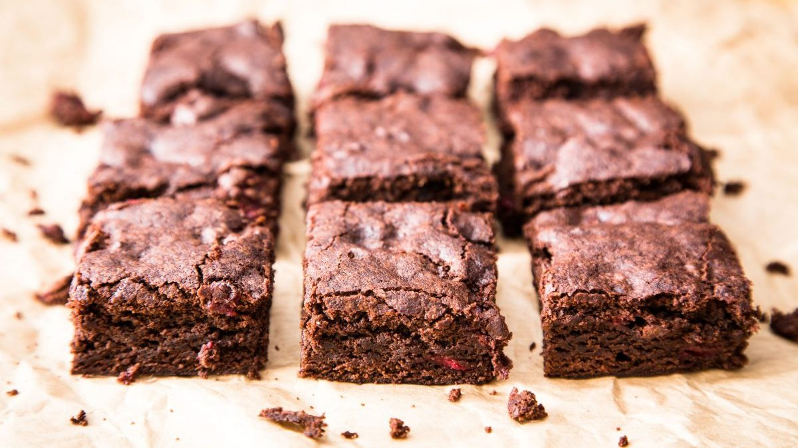
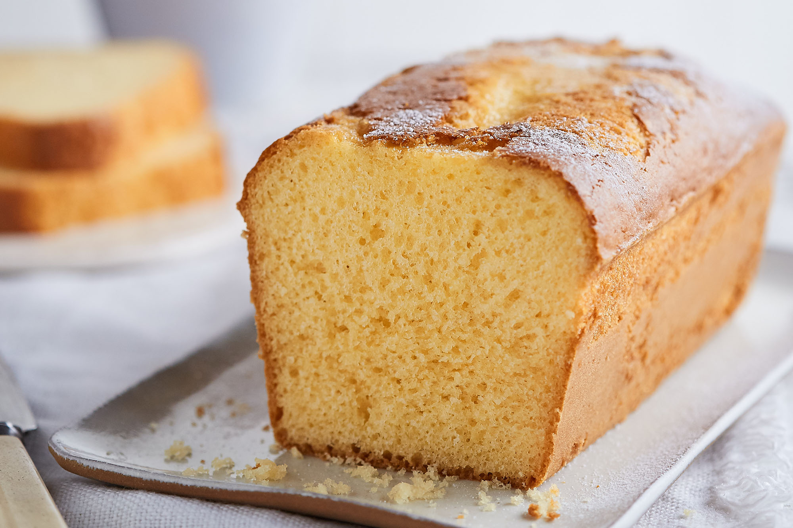
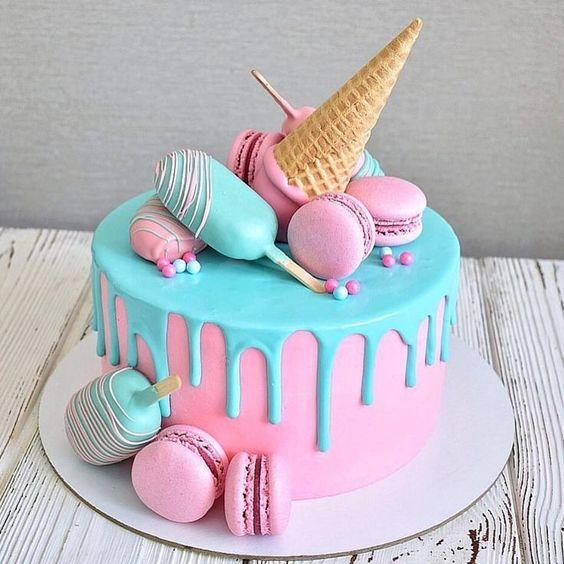

Budines
Budines
Tortas
Agradecimientos
Agradecemos a Paulina cocina por la cantidad de recetas que nos compartió ella por youtube, una genia
Agradecemos a Paulina cocina por la cantidad de recetas que nos compartió ella por youtube, una genia